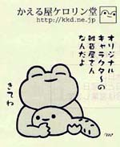
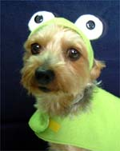
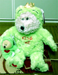
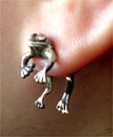
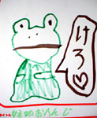

謎のケロリン屋が出現! 【江戸発きーちゃん同志記者】東京で仕事をしているうちのダンナが東京の地下鉄の会社が発行している「メトロニュース」という小冊子を 持ち帰って見せてくれまして…。通称「谷根千」（谷中・根津・千駄木の略称）の特集だったんですがその中に谷中にある「かえる屋ケロリン堂」というお店の紹介がありました。 ま…、我が家からは遠いしな…連れて行ってくれる事もないだろう…と思っていたんですが、昨日、ダンナがこの店に行ったらしく私にオリジナルのカエルグッズを買って来てくれました。 グッズの中には小さな印刷物が封入されており、お店の紹介がされていました。オリジナルのカエル・おたまのキャラクターでいろいろ手作りで販売されているみたいです。なかなか可愛いです。ホームページもあります。
【全国かえる奉賛会】ケロリン堂。いいよねえ。言葉の響きがすでに癒される。
 かえるモデル犬デビュー！【兵庫発坂蛙同志記者】写真のモデルはヨークシャーテリアのベル君、数えで8才 です。【全国かえる奉賛会】美しい！ベル君は、昔からカエルになりたかったに違いないです。人間用だけでなく、犬用にもカエルコスチュームができているとは、しらなかったぞおおお。
犬を飼っている人は、いまから全部カエルかぶりをしようではないかあああ。そして、金貸会社の宣伝犬としてデビューしてほしいぞおお。
スタバ熊もカエル化！ 【日本発ひなひな同志記者】こんにちは ひなひなです。スターバックスコーヒーで売っているクマのぬいぐるみ「ベアリスタ」が今日見たらカエルになっていました。やはりスタバもクマよりカエルの方がいいと気付いたのでしょうか？！
【全国かえる奉賛会】ベル君のカエル変身に心を動かされて、カエルをかぶったに違いないぞおおお。
 カエルイヤリングで妖艶変身！【福岡発謎の廃虚かえるナース同志記者】カエルイヤリングをみなさんは何種類くらいもっていますか。２０代の女性平均では、カエル指輪１３個、カエルイヤリング５種類。カエルネックレル４種類となっています。きょうは、お気に入りのものをつけてみました。
 １６日深夜からカエルお絵描き展スタート！【かえる展６実行委員会一堂】２月１６日深夜から、福岡市中央区天神の三越１階にある長さ８０メートルの通路脇に展開する、『パークサイドギャラリー』に、過去五回のカエル展でみんなに描いてもらったカエル絵１３００枚を一挙に公開します。自分が描いたカエル絵と、再会できるかもしれません。みんなみにきてねー。会期は２週間で、２月の２９日までです。
博多諤諤堂に22号室『かえるな日々』デビュー！ 【かえる展６実行委員会一堂】実行委員会が、カエルについて熱く語り合う日記コーナーが誕生しました。完全に内部ねたの連絡掲示板みたいになっているけど、みんなもみてくれええええ。目標連日更新です。
【かえる展６実行委員会一堂】実行委員会が、カエルについて熱く語り合う日記コーナーが誕生しました。完全に内部ねたの連絡掲示板みたいになっているけど、みんなもみてくれええええ。目標連日更新です。カエルな日々 � ケロケロ集団 かえる展を実行する謎のカエル集団による、カエルな日々を描いたカエル日記。このページをクリックしたその瞬間から、あなたもカエラーだあああ。 ここをクリック！！
|
メールマガジン登録
メールマガジン解除
Powered by


かえる古新聞過去に取り上げた記事を見出し付きで一覧したい人は、ここをクリック◆創刊号を見る◆先週号を見る◆話題の号を見る◆かえる新聞の昔を読む
|
私も入っています。。全国かえる奉賛会
大王様に会うには、このバナーをクリック。ずっと奥に写真館があるぞ。全国かえる奉賛会に入会するには、自分のホームページのどこかに、下の部分を追加するとバナーがリンク付きで表示されるぞ。どんどん入会しましょー |


|